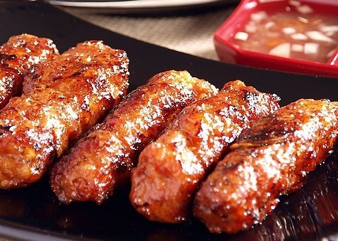

Longganisa Recipe

Description
Skinless longganisa refers to a type of Filipino sausage without the casing. It is also known as naked sausage. Filipino Longganisa can either be sweet or garlicky. This version has the best of both worlds. It also has no preservatives. This is best when eaten with sinangag na kanin along with itlog na maalat or salted egg and papaya atchara. I like to dip it in spicy vinegar before eating. Yummy!
Ingredients
- 1 ¾ lbs. ground pork
- 9 tablespoons dark brown sugar
- 1 tablespoon smoked paprika
- 3 tablespoons vegetable oil
- 1 ¼ tablespoons coarse salt
- 1 teaspoon ground black pepper
- 2 head garlic
- Peel the skin off the garlic cloves. Crush thoroughly using mortar and pestle. Mince the crushed garlic. Set aside.
- In a large mixing bowl, combine ground pork along with all of the ingredients. Mix well.
- Cover the bowl. Refrigerate for 2 hours.
- Shape the longganisa by laying a sheet of wax paper on a flat surface. Scoop around 3 tablespoons of mixture and put over the wax paper. Fold the wax paper from top to down until the mixture covered. Hold the edge of the paper with your fingers and then slide the card towards the mixture. Push a bit more until a sausage shape is formed. Do this step until the entire mixture is consumed.
- Cook the longganisa by combining 1 cup water and 4 tablespoons of cooking oil in a pan.
- Add the longganisa and then turn the heat on. Let the liquid boil, and then adjust to the lowest heat setting. Continue boiling until the water completely evaporates.
- Fry both sides of the longganisa in the remaining oil until it turns brown.
- Remove from the pan and arrange on a serving plate. Serve with rice. Share and enjoy!
Home